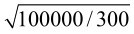

图4-1 耳机符号
雷宝玉
矿石收音机中有一个重要的元器件——耳机，它的功能是实现电声转换。耳机在电路中的符号如图4-1所示。常用于矿石收音机的耳机可分为两种，一种是电磁式耳机，另一种是舌簧式耳机。电磁式耳机由磁铁、线圈、铁质振动膜片和外壳组成，阻抗多为高阻；舌簧式耳机由磁铁、线圈、极靴、舌簧、振膜盆、连杆和外壳组成，阻抗多为中低阻，如图4-2和图4-3所示。
图4-1 耳机符号
图4-2 电磁式耳机
图4-3 舌簧耳机
当音频电流通过电磁耳机线圈时，耳机中磁铁的磁场就会随着音频电流忽强忽弱地变化，振动膜片受到磁场的吸力也就随着电流的变化而改变，振动膜片随之振动起来从而产生了声音。当音频电流通过舌簧耳机线圈时，舌簧所感应出的磁场随着音频电流忽强忽弱地变化并与极靴的磁场相互作用使舌簧在极靴之间摆动，通过连杆带动振膜盆振动从而产生了声音。
矿石收音机在工作时的调谐回路的阻抗RP 等于二极管的零电压电阻RD ，等于负载的阻抗RL 或者3倍的调谐回路的阻抗RP ，还等于二极管的零电压电阻RD 及负载的阻抗RL ，此时矿石机负载RL 能够得到最大的功率输出。为了使矿石收音机负载的阻抗RL 要达到二极管的RD 阻值有两个途径：（1）使用高阻抗耳机；（2）使用高阻抗匹配变压器，配高灵敏度的舌簧耳机。
1.高阻耳机
高阻耳机一般都是电磁式耳机，它们的阻抗有750Ω、1000Ω、2000Ω和4000Ω等。军用高阻耳机可达4400Ω，可直接作为检波矿石或二极管的负载发声，如图4-4所示。

图4-4 军用耳机及内部结构
这类耳机由于结构的限制，用于矿石机其灵敏度一般不是很高。相对检波二极管的零电压电阻RD 几十千欧到一兆多欧，耳机的阻抗还是相对较小，与二极管只能是接近匹配。
特别介绍一种适合矿石收音机用的德国德律风根（Telefunken）公司早期生产的耳机，见图4-5。一般耳机拆开盖子的时候，振动铁片是被磁铁吸引贴附在外壳上面的。德律风根耳机与众不同的地方是它的振动铁片固定在盖子下面。随着盖子旋转，振动铁片与磁铁两极的距离也跟着变化，因此可以把振动铁片调整到尽可能接近磁铁但又不会被吸死的最佳位置，再反方向旋转外壳螺旋线上的一个金属圆环，把盖子压紧固定，使它不能再向内转动。这样就可以把耳机调整到最灵敏的状态。
图4-5 德国德律风根（Telefunken）耳机
2.匹配变压器
匹配变压器是解决高阻耳机和检波矿石或二极管不能最佳匹配的一个很好器件。它的阻抗可以制作得很高，从几十千欧到几百千欧甚至兆欧，作为矿石或二极管的负载能够很容易实现RD =RL ，使之达到良好的匹配。为了调整方便灵活，一般都采用自偶匹配变压器，在低端采用不同阻值的抽头来配合不同阻抗的高灵敏舌簧耳机，实现最佳匹配。抽头的常见阻值由低到高为32Ω、64Ω、150Ω、300Ω、600Ω、1500Ω、3000Ω、5kΩ、10kΩ、20kΩ、40kΩ、100kΩ、200kΩ、400kΩ、800kΩ、1.2MΩ。
常见的成品匹配变压器有T725，见图4-6，最高阻抗为40kΩ。其他抽头阻抗依次为20kΩ、10kΩ、5kΩ、2.5kΩ、1.5kΩ、600Ω、300Ω、150Ω、次级为8Ω，通常将8Ω串在下端使用。T725是国外矿石机发烧友非常推崇的一款匹配变压器，它可以和1N34二极管进行较好的匹配，使用效果较好。虽然这款匹配变压器是国内生产的，但都属于出口产品，国内很难见到，只有少数“矿友”通过国外回流而得到。
为了使矿石机耳机与二极管之间达到良好的匹配，有网友利用铁氧体磁芯设计并量产了仿T725矿石机专用匹配变压器，见图4-7。设计这款匹配变压器时充分考虑了国内国外常见耳机的阻抗及常见二极管零电压电阻RD 和MOSFET检波的特点，优化选取了不同阻值的抽头。由低端到高端的阻抗依次为0Ω、32Ω、150Ω、300Ω、500Ω、800Ω、1.5kΩ、2.5kΩ、5kΩ、10kΩ、20kΩ、40kΩ、100kΩ、200kΩ。设计仿T725匹配变压器时采用了较大的设计余量，因此还可以进行超阻使用，使得各端阻抗值翻倍，最高阻抗200kΩ可超阻到400kΩ使用，和大多数二极管可以实现接近匹配。
仿T725是一款矿石机专用匹配变压器，也是目前国内外唯一量产的矿石机专用匹配变压器，除了受到国内“矿友”的关注，也被国外“矿友”批量采购。经国外“矿友”测试仿725匹配变压器的性能远远好于T725。
图4-6 T725匹配变压器

图4-7 仿T725匹配变压器
雷宝玉
舌簧耳机由于电磁结构与电磁式耳机不同，其灵敏度普遍要好于电磁式高阻耳机，但舌簧耳机一般是在有源电路中应用，阻抗比较低，直流电阻值仅为几十欧，交流阻抗在300～1500Ω，在矿石收音机中需要配备匹配变压器使用。
1.高灵敏度舌簧耳机介绍
常见的用于矿石机的国产舌簧耳机元件有：
（1）上海电讯器材厂生产的SC2-300耳机，如图4-8所示。直流电阻30Ω，交流阻抗300Ω，老式电话机的听筒和楼宇对讲系统多采用此元件。因为要安装在电话听筒里面，所以SC2-300体积小巧，外观直径为45.5mm，高度为21mm，极靴形状设计巧妙降低了高度，与舌簧之间的作用面积较大，坡莫合金的舌簧并设计了舌簧位置调整螺丝，可方便地调整舌簧在极靴磁隙中的位置，得到最佳的灵敏度。与匹配变压器配合用于矿石机是个不错的选择。
图4-8 SC2-300舌簧耳机元件
（2）军用舌簧耳机如图4-9所示，型号为SHH-1。这种叫作摆枢差动式耳机，用于军用电台，在矿石机上的表现不是很好，灵敏度不是很高。它的外型尺寸：φ45.5mm×17mm；频率范围：200～4000Hz；阻抗：150/300/350×（1±30%）Ω(1000Hz)；平均灵敏度：≥96dB/mW（200～4000Hz）。

图4-9 军用舌簧耳机SHH-1
（3）舰船甲板耳机元器件如图4-10所示。这是早期的舰船甲板耳机元器件，在设计时考虑到战时断电的情况下仍然能够使用，其结构设计采用了舌簧中间支架的方式，在舌簧两端分别安装相互反绕的线圈从而达到很高的灵敏度，是国内较为优秀的用于矿石机的耳机元器件。该耳机元器件用料讲究，外壳采用全金属材料，但随之带来的弊病是体积大和较大的重量。其参数为：直流电阻28Ω，电感量110mH，交流阻抗约700Ω。
图4-10 舰船耳机元件
（4）常见的用于矿石机的国外舌簧耳机元器件有以下几种。
① 美国USI公司的Sound Power USI-UA1614耳机，见图4-11。这是一款极为优秀的耳机元器件，灵敏度很高，其参数为：直流电阻62Ω，交流阻抗约1000Ω。早期美国大卫·克拉克（David Clark）公司生产的航空通信机就是采用这种耳机。图4-12所示的就是H5040型大卫·克拉克航空耳机。

图4-11 USI-UA1614耳机元件
图4-12 大卫·克拉克H5040型航空耳机
② 美国RCA的Sound Powered“Big Can”大罐头耳机。RCA 2040-A型手提电话里面的Sound Powered元器件就是“Big Can”，见图4-13。“Big can”在国外的“矿友”中备受推崇，被认为是用于矿石机的最好的耳机之一。
该机参数为：直流电阻130Ω，电感量250mH，交流阻抗约1500Ω。
这款耳机经配合匹配变压器在矿石机上试用，显示出很高灵敏度和高音质的非凡表现力。

图4-13 大罐头耳机元件
2.超高阻耳机元器件改造实例
舌簧耳机的交流阻抗较低，必须配合匹配变压器使用，如果直接用于矿石机必须要对耳机线圈进行超高阻改造，使之达到百千欧的交流阻抗。下面是一篇关于上讯SC2-300耳机元件的改造实例。
（1）漆包线的选用。
考虑到尽量多绕圈数，达到15000～20000圈以上，漆包线直径要尽量小，还要有一定的强度，保证绕制顺利。最好选用线径为0.025mm的漆包线，见图4-14。
图4-14 φ0.025mm高强度漆包线
（2）线圈骨架材料的选用。
原骨架的挡片比较厚，影响绕线量，所以要自制薄壁骨架。选用电工青壳纸作轴，3.5英寸软盘外壳最薄处作挡片，见图4-15和图4-16。

图4-15 电工用青壳纸做线架心轴
图4-16 3.5英寸软盘外壳做线架挡片
（3）线圈骨架的制作。
测量原线圈骨架的外廓尺寸，保证自制线圈能够非常吻合地放入极靴之中，见图4-17。
首先，制作心轴。将青壳纸根据骨架尺寸裁成小纸条并按图划线，见图4-18。用小刀将划线划深至纸厚的一半，但一定不能划透，然后按划线折起。

图4-17 原线圈骨架尺寸

图4-18 在青壳纸上画线
在软盘外壳的最薄处按尺寸划出骨架挡片的形状，并将其用刻刀裁下，见图4-19和图4-20。
图4-21所示的是裁好的线架挡片和心轴，将它们组合到一起，见图4-22。

图4-19 在软盘壳上划线
图4-20 最薄处0.6mm

图4-21 加工好的骨架心轴和挡片

图4-22 将心轴和挡片装到一起
用卡尺固定骨架，调整到适合的尺寸，点少量502胶水将其连接起来，见图4-23。
将固定好的骨架从卡尺上取下，用502胶水继续粘接，502胶水一定要浸透青壳纸，使其变硬，挡片和心轴连接处用502胶水溜缝，待其凝固干燥，见图4-24。

图4-23 整理挡片和心轴的相对位置
图4-24 用502胶粘接好
图4-25所示是制作好的线架与原线架的比较。图4-26所示是将自制的骨架装到极靴中看是否吻合。

图4-25 与原骨架的对比
图4-26 将骨架放入极靴
（4）线圈的绕制。
用市售的手摇绕线机（见图4-27），在轴头顶端钻一直径4.2mm的孔，用M5丝锥攻出M5的螺孔，见图4-28。将一个M5的长螺丝一端锉成1mm厚，用于固定线架，见图4-29。将锉扁的M5螺丝旋入绕线机轴头的M5螺孔中，并用螺母固定，见图4-30。
图4-27 市售的手摇绕线机
图4-28 将轴头攻成M5的螺孔

图4-29 将M5的长螺丝一端锉成1mm厚

图4-30 将扁螺丝安装在主轴上
将线架穿入锉扁的螺丝上，并用螺母紧固，调整好同心，见图4-31。

图4-31 将骨架固定
找一硬纸片，漆包线在上面绕10圈，除去纸片，用手将漆包线搓成20股线作为引线，见图4-32和图4-33。

图4-32 将0.025mm漆包线在纸片上绕10圈
图4-33 搓成20股的引线
引线穿入线架，绕几圈线，将引线压住，就可以开始绕线了，见图4-34和图4-35。
图4-34 绕线起头
图4-35 开始绕线
绕线时漆包线轴要垂直放于地面，手要控制漆包线左右移动，使漆包线均匀分布，必要时用一个放大镜放在线架上，以方便观察绕线情况。
绕满圈数为17500匝，还要在纸板上缠绕10圈作为引出线。绕好的线圈，外层用透明胶带缠紧就可以装到耳机上面了，见图4-36和图4-37。
图4-36 绕好的线圈
图4-37 装到耳机上
（5）电阻和电感量的测试。
用数字万用表测量出直流电阻为17.7kΩ，用电感表测量出电感量在374Hz时为53.4H，交流阻抗约为125kΩ，见图4-38和图4-39。至此超高阻舌簧耳机就改造完成了。
（6）改造效果。
a.耳机引线超过50cm时，在房间里能感应到交流声。
b.接收强台时音量减小，弱台音量提升，强台与弱台的音量差距减小。
c.去掉了匹配变压器与二极管直接匹配。
d.比低阻直接使用时灵敏度得到较大的提升，接收的弱台数量明显增多。

图4-38 耳机直流电阻
图4-39 耳机电感量
李清
矿石机与一般的收音机有着重要的区别，那就是普通的收音机里都有放大器，而矿石机里没有放大器。要想提高矿石机的性能就要尽可能减少矿石机各部分信号的损失，因此机内各部分电路之间的阻抗匹配就显得格外重要了，只有阻抗匹配了，信号传递时的能量损失才能最小。可作为矿石机检波的器件种类很多，各种矿石、很多型号的二极管、绝缘栅场效应管等，甚至经过发蓝工艺处理的刮胡刀片都能用来检波。
如此多的检波器件性能差别非常大，由这些器件组成的检波器输出阻抗也千差万别，而每只耳机的阻抗是一定的，不可能与各种不同的检波器都能实现阻抗匹配，解决这一矛盾的办法就是使用匹配变压器，使耳机与检波器实现阻抗匹配。
使用匹配变压器后，耳机与检波器实现了阻抗匹配，耳机得到了比阻抗失配时更多的能量，当然，这需要承担变压器产生的损耗，所以希望变压器的损耗越小越好。从矿石机爱好者使用的角度看，为了可以使用尽可能多的检波器做实验，就需要匹配变压器提供更多的不同阻抗端。
1.匹配变压器的替代品
矿石机爱好者们在制作矿石机时往往需要用到匹配变压器，在市场上很难见到适合矿石机使用的匹配变压器，因此很多爱好者都用一些市场上很容易买到的廉价小功率电源变压器代替匹配变压器。这些廉价的小功率电源变压器在一定的条件下是可以当匹配变压器用的，是否好用首先要看小电源变压器是否有足够的电感量，这点很重要！用电感量低的电源变压器做矿石机匹配变压器效果肯定不好。一般来说，功率越小的电源变压器的电感量就越大，所以最好当匹配变压器使用的电源变压器的功率都在2W以下。但是电源变压器的功率也不能太小，功率太小的电源变压器的线阻会很高，变压器的效率就会下降。一般情况下，功率在1～3W就可以了。在使用电源变压器代替矿石机的匹配变压器时，我们关心的是这只变压器适用于多大阻抗的耳机以及能提供多大的初级阻抗。要想了解这两个问题很容易。根据电压比的平方，就是阻抗比的方法就可以计算出变压器的阻抗比，然后用变压器的阻抗比乘以低阻耳机的阻抗值就得到了变压器的初级阻抗。
例如，有一个220V/6V电源变压器和一只32Ω的耳机，如果将32Ω耳机接在变压器的6V端，那么在220V端的阻抗是多少？
变压器的电压比≈36.67
阻抗比=36.67×36.67≈1344
接入32Ω的耳机后变压器初级阻抗=32×1344=43008（Ω）。
也就是说，变压器从变压器220V端看进去阻抗是43kΩ。
再例如，做一台矿石机需要一只阻抗50kΩ的耳机，现有一只阻抗300Ω的舌簧耳机，要用一只220V变多少伏的变压器才能将这只耳机的阻抗变换到50kΩ?
需要变压器提供的阻抗比=50000/300≈166.67
变压器的电压比等于阻抗比的开平方值≈13
变压器的次级电压值=220/13≈17（V）。
用220V变17V的电源变压器即可。
2.矿石机匹配变压器的简单设计方法
在要求不高的情况下，用电源变压器代替匹配变压器比较方便，但是效果不是很好，一是因为廉价的电源变压器铁芯质量较差，用于矿石机的匹配变压器时能提供电感量的裕度比较小。再者，一般的电源变压能提供的阻抗端子很少，并不能满足爱好者做各种矿石机实验。其实设计制作一只矿石机的匹配变压器并不难，如果制作者手头有现成的硅钢片铁芯、坡莫合金铁芯或是铁氧体磁芯，就可以用下面介绍的方法设计制作出匹配变压器。如果制作者有高质量的硅钢片铁芯、坡莫合金铁芯或是高导磁率的铁氧体磁芯，就能制作出性能很好的匹配变压器。下面是具体的设计方法。
首先，我们要根据想要得到的初级最大阻抗确定变压器初级最大的电感量，这一最大电感量的确定原则就是：这一电感量在规定的频率上产生的感抗要充分大于你要得到的最大阻抗。
例如，假设变压器的初级在频率为1000Hz时最大阻抗打算做到100kΩ，那么我们可以计算出这100kΩ对应的电感量L=100000/（2πf）=16H，也就是说，这个变压器如果初级电感量做到了16H，那么在次级不接任何负载时（完全开路），其初级的阻抗最高也就是100kΩ了。为了让次级负载的阻抗有反射到初级的余地，我们要绕出的线包的最大电感量一定要充分大于16H，比如我们可以确定为16H的5倍或是8倍，当然10倍也行，假设就用5倍，那么绕组初级的最大电感量就是16×5=80H。
其次，确定绕线匝数。绕线匝数由一个实验来确定，为此我们最好有一部能测量电感量的交流电桥，这样计算出的匝数就会很准确。如果没有电桥，也可以用普通的数字电感电容表，但是这样做的误差比较大。具体方法是：先在线架上绕上N匝线圈，然后装好铁芯，测量这N匝的电感量，然后把测得的电感量除以N的平方，我们就得到了每匝的电感量。我们用需要的最大电感量除以每匝的电感量，再把除得的商开平方，得到的就是最大电感量所对应的线圈匝数了。
例如，假设取N=10（N越大结果越准），我们先在线架上绕了10匝，假设装好铁芯后测得电感量是100μH，那么100μH/（NXN）=100/100=1，即每匝1μH。总匝数等于80H除以1μH的商开平方，即80/0.000001=80000000，80000000开平方约为8944匝。这也就是说这只变压器的100kΩ线包要绕8944匝。其他的阻抗端“根据匝数比的平方是阻抗比”这一规律很容易计算出。
以上介绍的方法没有将变压器的损耗计算在内，在实际应用时我们可以按如下例子计算。
我们已知100kΩ要绕8944匝，那么300Ω阻抗端要绕的匝数是8944/( )≈490匝，如果要3kΩ阻抗，阻抗比是3000/300=10，匝数比是10开平方，等于3.16，3kΩ端的匝数是490×3.16≈1550，考虑变压器的损耗，加入10%的修正系数，1550×1.1=1705即，3kΩ阻抗端实际要绕1705匝，同理，100kΩ端就不要绕8944匝了，而是改绕8944×1.1=9834匝。如果需要更多阻抗的抽头，只要按上述方法计算出对应阻抗端的匝数即可。
以上的方法避开了匹配变压器设计时要知道铁芯导磁率、要计算磁路长度等的麻烦，而是用实验的方法确定了匝数，使得设计过程简化了许多。这一方法很适合业余矿石机爱好者，大家不妨试试。
上面的设计方法可得到匹配变压器在各个阻抗端的具体匝数，实际制作变压器还要确定绕制各个阻抗线圈的漆包线的线径。当然线径越粗越好，线径越粗，线阻就越小，绕出变压器的效率就高，但是铁芯的绕线空间有限，线径粗了可能就绕不下了，所以低阻抗端尽量用粗些的线，高阻抗部分的线用细些的。
自己设计制作的矿石机匹配变压器一般都做成自耦变压器，自耦变压器的次级绕组是初级绕组的一部分，这样做成的变压器线包总匝数少，在同样的绕线空间内就可以用更粗的线绕制，降低了线包的线阻，提高了变压器的效率。自耦变压器初次级之间的耦合很紧密，对提高变压器的效率也很有利。
计算出变压器各个阻抗端的匝数数据后，就可以绕制变压器了，绕制的过程也很简单，应该大致估算一下变压器磁芯的绕线空间，只要保证能绕下，线径应尽可能粗，至少阻抗低的几个绕组用线要粗一些，这样绕出的变压器效率会高些。绕制时不必排线，乱绕即可，但是要尽量保持绕制过程线包面平整。
自制矿石机匹配变压器的铁芯要尽量选择质量好的，质量不好的铁芯绕出的变压器效率比较低，高质量的硅钢片、坡莫合金、导磁率较高的铁氧体磁芯都是制作矿石机匹配变压器的好材料。
实践证明，导磁率在2000以上的铁氧体磁芯做出的匹配变压器性能很好，如果导磁率能上万就更好了。所选磁芯的体积不必太大，太大的磁芯虽然可以用粗线绕制，但是大磁芯的磁路长，反倒不如小些的磁芯更容易做出高效率来。磁芯也不宜过小，太小的磁芯线包绕制会很困难。线包绕好后安装磁芯时一定要保证两磁芯的接触面干净，结合尽量紧密，为此磁芯一定要裹扎紧密、牢靠。
导磁率较高的铁氧体磁芯不难找到，价格也不算贵，而且铁氧体磁芯具有电阻率高、涡流损耗低等优点。铁氧体磁芯最大的缺点就是易发生磁饱和，刚好矿石机输出的信号很小，一般不会造成铁氧体磁芯的饱和，所以用铁氧体磁芯制作矿石机的匹配变压器刚好可以扬长避短，取得好的效果。实践证明，用上述方法设计制作的铁氧体磁芯变压器效率达到90%以上是完全可能的，实际使用效果很好。
按上述方法设计、计算阻抗端较多的匹配变压器会感觉比较烦琐，计算过程需要较长的时间，而且很容易出错。为了解决这一问题，有矿石机爱好者用Excel表格制作了匹配变压器设计计算表格，使用这一表格设计计算一款多阻抗端的矿石机匹配变压器只要十几分钟便可搞定，非常方便。
图4-40所示便是使用这个设计表格设计一款匹配变压器时的界面。
图4-40 用Excel表格设计的匹配变压器计算表格
图4-41所示的这只变压器是国外矿石机爱好者经常使用的T725变压器的实物照片，这款T725变压器虽然是中国制造的，但是在国内很难买到。
图4-41 T725变压器
图4-42所示是用本文介绍的方法设计制作的3种矿石机专用匹配变压器。

图4-42 3种矿石机专用匹配变压器
聂建军
互联网有着无可比拟的跨地域优势，2007年初，麦老师从国外介绍了MOSFET场效应管110800、110900模块制作的矿石机，并团购了一些分发给国内部分“矿友”。由于110800、110900场效应管有零偏压的优点，检波效率高于传统二极管，便于制作高灵敏度矿石机和场效应管自由能再生矿石机。但是110800和110900价格都很高，国内没有货源，而且使用中容易损坏。有没有可以经济便宜的替代品？中国矿石机爱好者同样有着极高的好奇心和进取精神，开始了大海捞针式的海选，尝试各种能找到的各种场效应管，并做了大量的试验。
2007年11月，呼号为BD5IF的坛友报出：“早些时候，从旧高频头里拆了一只（3S）K123（以前只看过122），代替2AP9接进了矿石机。首先感觉是能用，凭耳朵听不出它和2AP9的高低，后来用数字万用表的200mV挡在耳机两端量直流电压，反复对比，发现它略逊于2AP9。”
梁道雄老师继而也发现高频头中的3DP踪迹：“旧彩电高频头是换上增补频道高频头后取下的高频头，这种高频头中有两个双栅MOSFET，是贴片管，型号不详，上面字样有3DP、3EB、F1等，这3种字样者上机效果很好，有旧高频头的同学不妨挖两个试试。为什么叫挖，为保护这种“娇气”元件，多次焊不好，BD5IF用剪下的方法也行，我则用刻刀挖出来再焊到印制板上。”
廉价场效应管踪迹终于显现，之后梁道雄老师又做了大量实验，证明3DQ、3DP系列双栅场效应管可以完美替代110800场效应管，“效果比四管并联的110800要好些”，而且不像110800、110900那样容易损坏。李清老师做了场效应管矿石收音机检波的多种矿石机应用参数分析试验。
适合矿石机使用的场效应管找到了，大量推广需要货源，究竟3DQ的完整型号是什么？梁老师与张卫国老师经过几年的共同努力终于找到货源，3DQ、3DP、3DB三种3SK143Q、3SK143P、3SK143B场效应管。二人合作为3SK143系列场管开发了两种矿石机应用套件。从此场效应管矿石机开始火遍矿坛，“3DQ”就成了双栅场效应管矿石收音机在矿坛的代名词。
聂建军
要制作性能优良的矿石机就离不开高品质线圈，制作高品质中波线圈要注意以下几点：
（1）线圈直径（包括蛛网）应不小于120mm（不含铁氧体线圈）。
（2）要使用利兹线（多股纱包线）。单股漆包线或其他类型线绕出的线圈Q值不会很高。国内可购到的利兹线单股直径有0.04mm、0.07mm、0.1mm等，国外有0.02mm的。数量有7股、60股、175股、270股、660股等。实践应用中，我发现0.02mm和0.04mm绕中波线圈Q值最高。
（3）线圈相邻两线之间应尽量“远离”。距离在一个本身线径以上最好。
（4）线圈支架要选用介质损耗低的材料。首选聚四氟乙烯，PP材质的“菜板”和有机玻璃也是常用的原料，不能用酚醛板或木板等。如果条件允许，线圈尽量做成脱胎结构。
（5）大型线圈要远离金属物质及介质损耗大的材料，这会损失线圈Q值。
下面介绍几种常用线圈。
（1）桶型线圈：如图4-43所示，这是初学者常常制作的线圈，制作时一般采用平绕方法。当线圈直径大于100mm，用介质损耗低的骨架， φ0.04mm×660股利兹线可得到较高的Q值。
图4-43 桶型线圈
（2）花篮线圈：许多优秀矿石机都使用这种线圈。常见绕制方法为“上一下一”和“上一下二”，图4-44所示是两种绕线方式示意图。绕出的成品外观见图4-45。

图4-44 两种绕线方式示意图

图4-45 绕制完成的成品
在同样直径同等匝数的情况下，“上一下一”绕出的线圈Q值高，线圈宽度大。“上一下二”绕出的线圈电感量大，线圈宽度小。当线圈直径超过100mm时，用φ0.04mm×660股线，可获得1000以上空载Q值。直径增大， Q值增加。图4-46和图4-47所示都是用直径为135mm线分别用两种绕法绕出的线圈空载Q值，图4-48所示是用直径为150mm线“上一下一”方法绕制的线圈空载Q值。
（3）蛛网线圈：采用同样直径线，蛛网线圈比花篮线圈Q值低。这种线圈的优点是用线量少，整个线圈Q值较平均。图4-49所示的蛛网线圈外径为130mm，内径为60mm，用φ0.04mm×270股利兹线绕52匝，电感量为300μH。
图4-46 用φ135mm的线采用“上一下一”绕制方法所获Q值

图4-47 用φ135mm的线采用“上一下二”绕制方法所获Q值

图4-48 用φ150mm的线采用“上一下一”绕制方法所获Q值

图4-49 蛛网线图
（4）磁环线圈：由于磁环是一个闭合回路，所以效率很高，因此用线最少。这种线圈的缺点是要实现精细耦合比较麻烦。图4-50所示是北京七九八厂生产的型号为NXO-40、（R40C1）的磁环，它的尺寸为37mm×23mm×15mm，用φ0.04mm×270股利兹线绕的线圈，测试频率为900kHz，它的电感量为250μH。
（5）磁棒线圈：现代许多人都喜欢用磁棒线圈做矿石机。中短波磁棒比中波磁棒有更高的Q值。图4-51所示是用两根90mm中短波磁棒与直径40mm小花篮组成的线圈，它的电感量为255μH。

图4-50 磁环线圈

图4-51 磁棒线圈